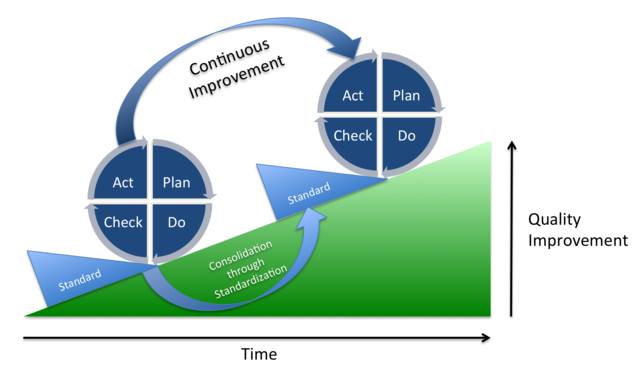

5 Minute DevOps - Engineering Culture Change with CI
Written by Bryan Finster
12 Oct 2019

So, you hired an “Agile Transformation” consulting company to advise executive leadership and you’re “Agile” now. Leadership attended a week-long class on “Agile”, teams took a two day class about Scrum being The Way. The new methodology with story points, daily standup, and sprints now reigns, but outcomes haven’t changed. Next, you talk about the “agile mindset” while Scrum Masters report monthly on how much “velocity” has increased. At the team level, the labels have changed, but the processes are the same. Possibly there is less design, but you don’t design solutions in “Agile”. They just “emerge”, right?
What went wrong? Marketing and the desire for silver bullets overtook goals and outcomes. You saw a framework that was popular and bought it without understanding the underlying principles. However, frameworks are solutions that worked for someone else in their context, not yours, and no drive-by “transformation” will result in anything except loss revenue, frustration, and low satisfaction from both customers and employees. For real change to happen, it needs to be ingrained into the culture. Culture and mindset change requires behavior change. At the team level, we do this with constructive constraints and rapid feedback.
“Our highest priority is to satisfy the customer through early and continuous delivery of valuable software.” Principles of Agile Development
There’s our goal: the continuous delivery of valuable software is our highest priority. That’s the outcome we are after, continuous delivery; CI/CD. We can measure that outcome, apply the correct constraints, and move the culture. Not Buzzwords
Continuous integration and continuous delivery have measurable outcomes, they aren’t buzzwords. I often hear people use “CI/CD” when they mean build tool automation and don’t even get me started on “DevOps”.
“We’ve created a DevOps team to implement CI/CD pipelines and manage the releases. We’re DevOps now!”
How many of you just cringed?
Continuous integration is behavior, not Jenkins, CircleCI, Travis, or any other tool. CI is how we apply these tools and CI is the key to transforming teams. However, to be effective, we need to be explicit about CI definitions and how we measure our ability to execute.
Ubiquitous Language
Each developer submits tested, backwards compatible changes that are Integrated to the trunk daily.
This definition creates constructive constraints and rapidly uncovers cultural, technical, and process challenges. Asking continuously, “why can’t we do this?” drives the improvement conversation. The common challenges are basic but take discipline to solve.
- Workflow isn’t managed correctly with too many things in progress, lack of prioritization, and lack of teamwork to drive things to completion.
- Work hasn’t been refined to the detail required to deliver it.
- Testing is manual, requires handoffs to a testing team, or just doesn’t exist.
All of these impact quality and delivery speed. To fix them, we start with some simple improvements.
Establish Policies
Explicit policies are important for keeping everyone aligned. Keep them concise, clear, and always visible. Policies stored on a file share do not exist. Print them and post them.
CI Working Agreement
A working agreement focused on CI highlights the real priority, sustainable delivery of decreasing batch size with high quality and rapid development feedback.
- Fixing a broken build is the team’s highest priority because we cannot fix production with a broken build.
- The team will not go home while the build is broken because it puts production at risk.
- We do not blame team members for broken builds. The team is responsible for hardening the build process against breaks so the team broke the build.
- All branches originate from the trunk and are deleted in less than 24 hours
- All changes must include all relevant tests and may not break existing tests
- Changes are not required to be “feature complete” Helping the team complete work in progress is more important than starting new work
- No work may begin before it meets our “definition of ready”
This will not happen on day one. The team should be asking daily, “what’s the main reason we cannot do this?” and apply fixes until they can.
Definition of Ready
For any step, there must be exit criteria to prevent rejection from downstream steps. For refining work, it must be clear enough to prevent questions, guessing about what requirements mean, or gold plating during development.
- Acceptance criteria aligned with the value are agreed to and understood by the team and business
- Dependencies documented and solutions in place to allow delivery without them
- Any required research / training is complete
- Interface contract changes documented
- Component functional tests defined
With these policies in place, the team can begin removing other roadblocks.
Visualize Metrics
Until you know where you are, you cannot chart a path. Metrics are meaningless unless they are always visible. We use Hygieia to monitor CI outcomes, before that, we built Graphana views. No matter what method you choose, current metrics must be kept visible to everyone.
- How frequently are pull requests integrating to Master?
- What’s the average branch age?
- How long does it take to fix broken builds?
- How stable is the build?
- Is the build taking too long?
- How many tests are running and is that number increasing?
Track them, gamify them, make them better, and understand the goal is continuous improvement. Metrics are indicators, not goals.
Clear Impediments
Now the real work of changing habits begins. Habits change when previous habits no longer deliver value. When there is no pressure to integrate more frequently, re-refining work in progress doesn’t cause much pain. Integrating code once a week or longer with multi-hour code reviews and regular merge conflicts seem normal and acceptable. With our new drive to deliver code to the trunk daily, things must change.
Improve Refining
Improperly refined work has cascading impacts on quality outcomes. If work isn’t refined to the level of testable acceptance criteria, then there are too many uncertainties and delivery pressure results in guesswork during development. This impact proper testing since poorly refined work drives developers into a constant “proof of concept” mindset with exploratory coding as the primary flow. It’s very common to see retry loops in a value stream map after development has started where developers are waiting on clarification. This, in turn, incentivizes increased WIP as they pick up new work while they wait and additional delivery delays as they context switch back or just park the original work until he lower priority WIP is completed.
Behavior Driven Development is an important tool for changing the culture and improving outcomes. BDD focuses on collaborating with all stakeholders to uncover the real business needs. Outcomes are owned by all of the stakeholders, not just the developers. We don’t finger point, we problem solve and focus on improvement. We also learn together that we’d rather fail small.
“Simplicity — the art of maximizing the amount of work not done — is essential.” Principles of Agile Development
BDD gives us declarative, unambiguous acceptance criteria that can be tested. Now we have feature level functional tests that decompose into component level functional tests easily identifiable contract changes. We have a much higher level of confidence for what the business wants because they helped us define it and own the outcomes. We also know what NOT to develop since anything we develop beyond what we agreed to is a defect.
With a hard definition of done and clear delivery goals, we can easily swarm the work as a team. Which services will be impacted? Will new services be required? How can we collaborate to deliver those changes as a team?
Improve Testing Process
CI/CD is a quality process, not build automation. In a previous “5 Minute DevOps”, I spoke about the layers of tests required to execute CI/CD correctly. To add to that, two quotes from one of my favorite books.
“It’s interesting to note that having automated tests primarily created and maintained either by QA or an outsourced party is not correlated with IT performance. “ “Automated unit and acceptance tests should be run against every commit to version control to give developers fast feedback on their changes. Developers should be able to run all automated tests on their workstations in order to triage and fix defects.” Excerpts From: Nicole Forsgren PhD, Jez Humble & Gene Kim. “Accelerate.”
Real CI requires that testing primarily happens before code commit. It also means that manual testing and/or handoffs to a “testing team” will break us. We cannot meet our goals that way. Habits must change.
- Since the team defined how the feature will work to a testable level during refining, all that’s required is to implement the tests. Instead of struggling to come up with what to test, developers can spend time designing HOW to most efficiently test against the goal. This results in more downstream improvement.
- Code reviews improve. There is no need to code review for functionality, that’s what tests are for. Code review can focus on readability and verifying that the tests match what was agreed to as a team. The tests validate the new functionality and protect that behavior on every subsequent build. As we reduce the time between merges, changes are smaller and code review is more effective and can be completed in minutes instead of hours.
- The increased confidence that we can make change without breaking existing features makes development faster. We sleep better at night because we know we can triage and fix things faster at 3:00 am without risking breaking things even more.
- Test suites are less likely to become spaghetti code because we need our tests to run quickly. Test code is code and requires constant design and refactoring. The need for rapid test results helps this happen. Michael Nygard once told me that he created a test that would fail the test suite if it ran for longer than 15 minutes to force refactoring of the tests. Brilliant.
Workflow Management
Individuals don’t win in business, teams do. Sam Walton
Imagine a football team where everyone was measured only by how often they scored. Everyone will be focused on getting the ball, scoring, and being a hero instead of helping the teammate who has the ball. The same happens on a development team.
Have you seen a team where everyone has assigned tasks instead of pulling work or where individuals are measured based on how many tasks they complete? With everyone focused on their task list or making themselves appear to be heroes, they aren’t focused on helping to deliver the next value item. You’ll see this in long wait times on pull requests, cherry-picking low priority, easy to complete work or increased work in progress. They look busy, but value delivery is minimal.
The teamwork expectations and time box constraints in the CI working agreement along with leadership understanding how to incentivize better outcomes result in lower lead time and increased throughput. The team only looks less busy.
Only Outcomes Matter
Working software is the primary measure of progress. Principles of Agile Development
The customers only care about how quickly they can see value from the next feature. As development leaders, the goal is to help the teams find better ways to deliver value and to align the process in ways that encourage this. CI is an effective way to do this if the correct policies are in place. It provides easily measurable outcomes that allow rapid feedback for any improvement experiment. Because of the level of teamwork required to execute at a high level, it’s also an effective way for a new team to more quickly evolve from “forming” to “performing”. We’ve witnessed this repeatedly.
One note to this: Teams grow and learn as organisms. Team members are not legos. Adding or removing anyone from a team reduces the team’s effectiveness. Team change should be done carefully and infrequently unless improved outcomes isn’t a goal.
Excuses
Some may assert that CI works quite well using an “integration branch” or GitFlow, that integrating every week or once a sprint is fine, or that only complete work should be integrated, I’ve heard all of those excuses before. I’ve also failed that way. Real CI drives real results. Culture changes because the underlying behaviors change. The reverse is never true. Don’t allow lack of knowledge, lack of testing, or fear prevent improvement.
Fix the problems.
This post originally appeared on Medium. You can see other posts in the 5 Minute DevOps series there